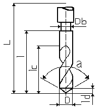

| Name | SPIBO_VHM_D10.0 |
| Tool number | 104 |
| Nominal diameter | 10mm |
| Overall length | 89mm |
| Length | 49mm |
| Cutting length | 31mm |
| Body diameter | 10mm |
| Tool tip length | 1,82mm |
| Cutting angle | 140deg |
| Coolant syntax | ON |
| Weight syntax | 20102 |
| Max machining length | 0mm |
| Max life time | 0s |
| Axial tool rake angle | 0deg |
| Radial tool rake angle | 0deg |
| Number of flutes | 2 |
| Way of rotation | Right hand |
| Machining quality | Either |
| Tooth material | Coated carbide |
| Old Attribute Cutting speed | 90000mm_mn |
| Feedrate per tooth | 0,1mm_turn |
| Depth of cut | 10mm |
| Max machining feedrate | 100000mm_mn |
| Cutting speed | 90m_mn |
| Feedrate | 0,2mm_turn |
|

Type : Drill
|